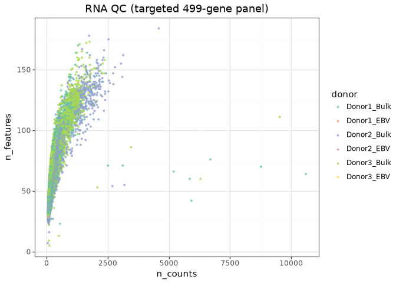
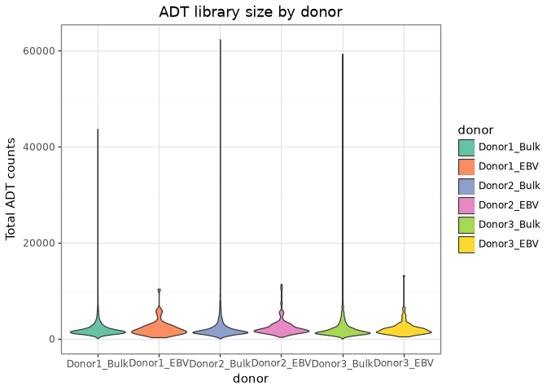
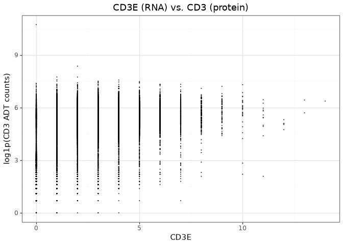
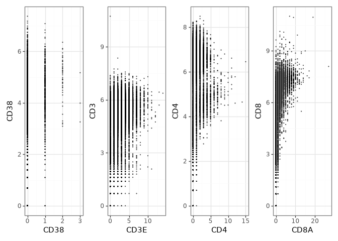
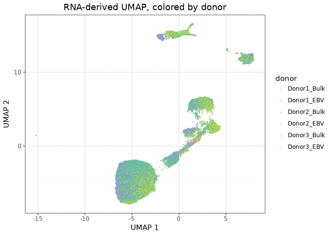
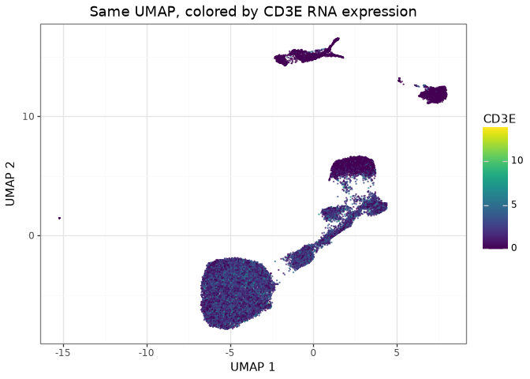
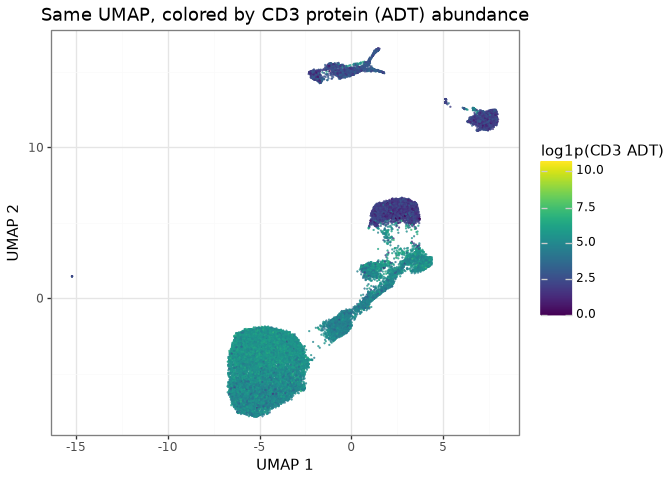
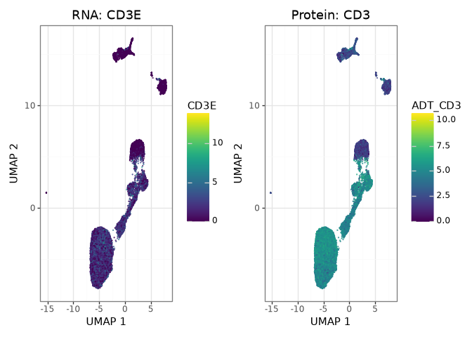

Notebook
This page is generated from a Quarto vignette executed against real
public datasets. The source lives in
vignettes/ in the repository.
Multimodal: RNA + protein (CITE-seq)¶
RNA/ADT interoperability in PBMC CITE-seq data
CITE-seq measures transcripts and surface proteins in the same cells. This workflow uses a PBMC dataset to combine RNA and antibody-derived tag (ADT) measurements with BiocPy, AnnData, MuData, and ggnomics.
[1]:
import sys, pathlib
sys.path.insert(0, str(pathlib.Path("_includes").resolve()))
from setup import configure_warnings, ensure_matplotlib_initialized
ensure_matplotlib_initialized()
configure_warnings()
import numpy as np
import pandas as pd
import ggnomics as gg
from plotnine import theme_bw, labs, theme
1. Data source¶
ExperimentHub resource EH7740 (CITEVizTestDataSCE, approximately 2,500 cells) is distributed as a multimodal SingleCellExperiment. With the current experimenthub/rds2py versions, its nested int_colData structure cannot be parsed:
[2]:
from experimenthub import ExperimentHubRegistry
from setup import EXPERIMENTHUB_CACHE
hub = ExperimentHubRegistry(cache_dir=str(EXPERIMENTHUB_CACHE))
try:
hub.load("EH7740")
except Exception as exc:
print(f"{type(exc).__name__}: {str(exc)[:200]}...")
Package 'multiassayexperiment' is not installed.
RuntimeError: Failed to load R data from /home/maximiliann/.cache/ggnomics-docs/experimenthub/39284e0ebbff45269ed5ad6956a86002_pbmc-cite-seq-2500-sce.rds: Error initializing 'PyRdsParser': Error in 'RdsObject' cons...
We therefore use the Mair et al. BD Rhapsody PBMC resources EH3534–EH3538, which provide 499 RNA features, 42 ADT features, and 29,033 droplets from three main donors. The individual ExperimentHub resources are assembled by load_pbmc_cite_seq().
[3]:
from data import load_pbmc_cite_seq
mods, note = load_pbmc_cite_seq()
note
"EH7740 failed to load (RuntimeError: Failed to load R data from /home/maximiliann/.cache/ggnomics-docs/experimenthub/39284e0ebbff45269ed5ad6956a86002_pbmc-cite-seq-2500-sce.rds: Error initializing 'PyRdsParser': Error in 'RdsObject' constructor: failed to parse an S4 object's body\n - failed to parse a pairlist body\n - failed to parse pairlist element 'int_colData'\n - failed to parse an S4 object's body\n - failed to parse a pairlist body\n - failed to parse pairlist element 'listData'\n - failed to parse an R list body\n - failed to parse list element 2\n - failed to parse an S4 object's body\n - failed to parse a pairlist body\n - failed to parse pairlist element 'listData'\n - failed to parse an R list body\n - failed to parse list element 1\n - failed to parse an S4 object's body\n - class attribute in an S4 object should have a 'package' character attribute); using EH3534-EH3538 fallback"
2. Discovering the RNA and ADT representations¶
[4]:
rna, adt = mods["rna"], mods["adt"]
rna
AnnData object with n_obs × n_vars = 27258 × 499
obs: 'sample_tag', 'donor', 'cartridge'
var: 'RefSeq', 'Type'
layers: None (.X)
[5]:
adt
AnnData object with n_obs × n_vars = 27258 × 42
obs: 'sample_tag', 'donor', 'cartridge'
var: 'Alternative', 'ID'
layers: None (.X)
[6]:
adt.obs["donor"].value_counts()
donor
Donor2_Bulk 9150
Donor1_Bulk 8932
Donor3_Bulk 8843
Donor2_EBV 168
Donor3_EBV 113
Donor1_EBV 52
Name: count, dtype: int64
4. Mapping RNA genes to ADT proteins¶
Protein names do not always match their corresponding gene symbols. adt.var["Alternative"] provides the mapping used here:
[8]:
rna_genes = set(rna.var_names)
matched = [(protein, gene) for protein, gene in adt.var["Alternative"].items() if gene in rna_genes]
len(matched), matched[:8]
(38,
[('CD103', 'ITGAE'),
('CD11b', 'ITGAM'),
('CD11c', 'ITGAX'),
('CD123', 'IL3RA'),
('CD127', 'IL7R'),
('CD134', 'TNFRSF4'),
('CD137', 'TNFRSF9'),
('CD141', 'THBD')])
5. RNA QC and ADT QC¶
[9]:
rna_qc = pd.DataFrame({
"n_counts": np.asarray(rna.X.sum(axis=1)).ravel(),
"n_features": (rna.X > 0).sum(axis=1),
"donor": rna.obs["donor"].to_numpy(),
})
gg.plot_coldata(rna_qc, x="n_counts", y="n_features", color_by="donor") + theme_bw() + labs(title="RNA QC (targeted 499-gene panel)")

plot_adt_qc uses isotype controls to estimate background signal. This panel contains immune markers but no annotated isotype-control antibodies, as seen from its feature names:
[10]:
sorted(adt.var_names)
['CD103',
'CD11b',
'CD11c',
'CD123',
'CD127',
'CD134',
'CD137',
'CD14',
'CD141',
'CD16',
'CD161',
'CD163',
'CD183',
'CD184',
'CD19',
'CD194',
'CD196',
'CD197',
'CD1c',
'CD206',
'CD223',
'CD25',
'CD27',
'CD278',
'CD279',
'CD28',
'CD3',
'CD32',
'CD38',
'CD39',
'CD4',
'CD40',
'CD45RA',
'CD45RO',
'CD56',
'CD69',
'CD8',
'CD80',
'CD86',
'HLA-DR',
'TCRgd',
'Tim3']
[11]:
try:
gg.plot_adt_qc(adt, isotype_controls=[])
except ValueError as exc:
print("ValueError:", exc)
ValueError: isotype_controls must be a non-empty list.
The function therefore cannot calculate an isotype-based QC summary for this dataset. The empty control list in the check above shows the corresponding validation error; the API reference documents the required input.
A control-free library-size check can still be drawn with plot_coldata:
[12]:
adt_qc = pd.DataFrame({
"adt_counts": np.asarray(adt.X.sum(axis=1)).ravel(),
"donor": adt.obs["donor"].to_numpy(),
})
gg.plot_coldata(adt_qc, x="donor", y="adt_counts", shape="violin") + theme_bw() + labs(title="ADT library size by donor", y="Total ADT counts")

The raw ADT counts are strongly right-skewed, so the scatter and embedding plots below use a log1p-transformed copy of the ADT modality:
[13]:
adt_log = adt.copy()
adt_log.X = np.log1p(adt_log.X)
6. RNA-versus-protein scatter (MuData)¶
[14]:
import mudata as mu
mu.set_options(pull_on_update=False)
mdata = mu.MuData({"rna": rna, "prot": adt_log})
mdata
MuData object with n_obs × n_vars = 27258 × 541
2 modalities
rna: 27258 × 499
obs: 'sample_tag', 'donor', 'cartridge'
var: 'RefSeq', 'Type'
layers: None
prot: 27258 × 42
obs: 'sample_tag', 'donor', 'cartridge'
var: 'Alternative', 'ID'
layers: None[15]:
gg.plot_bimodal_scatter(mdata, x_feature="CD3E", y_feature="CD3", x_mod="rna", y_mod="prot") + theme_bw() + labs(title="CD3E (RNA) vs. CD3 (protein)", y="log1p(CD3 ADT counts)")

7. Matched gene/protein panel¶
[16]:
pairs = [(gene, protein) for protein, gene in matched if protein in ("CD3", "CD4", "CD8", "CD38")]
pairs
[('CD38', 'CD38'), ('CD3E', 'CD3'), ('CD4', 'CD4'), ('CD8A', 'CD8')]
[17]:
panels = [
gg.plot_bimodal_scatter(mdata, x_feature=g, y_feature=p, x_mod="rna", y_mod="prot") + theme_bw() + theme(figure_size=(3, 3))
for g, p in pairs
]
panels[0] | panels[1] | panels[2] | panels[3]

8. An embedding computed from RNA, colored by RNA and by protein¶
The ExperimentHub bundle does not include an embedding. We calculate QC metrics, normalize the RNA counts, and run PCA and UMAP with scranpy, following the single-cell workflow. HVG selection is omitted because this is already a targeted 499-gene panel. The processed object is cached by run_scranpy_pipeline_on_cite_seq_rna().
[18]:
from data import run_scranpy_pipeline_on_cite_seq_rna
final_rna = run_scranpy_pipeline_on_cite_seq_rna()
final_rna.get_reduced_dim_names()
['PCA', 'TSNE', 'UMAP']
[19]:
final_for_export = final_rna.set_metadata({})
adata_final, _alt = final_for_export.to_anndata()
adata_final.X = adata_final.layers["counts"]
# Align the ADT modality to exactly the QC-passing RNA cells (order preserved).
adt_aligned = adt_log[adata_final.obs_names, :]
for protein in ("CD3", "CD4", "CD8", "CD38"):
adata_final.obs[f"ADT_{protein}"] = np.asarray(adt_aligned[:, protein].X).ravel()
gg.plot_umap(adata_final, color="donor") + theme_bw() + labs(title="RNA-derived UMAP, colored by donor")

[20]:
gg.plot_umap(adata_final, color="CD3E", layer="counts") + theme_bw() + labs(title="Same UMAP, colored by CD3E RNA expression")

[21]:
gg.plot_umap(adata_final, color="ADT_CD3") + theme_bw() + labs(title="Same UMAP, colored by CD3 protein (ADT) abundance", colour="log1p(CD3 ADT)")

RNA and protein measurements both highlight the CD3-high T-cell region, providing a simple visual comparison across modalities.
9. Composability¶
Because both embeddings are returned as ggplot objects, they can be placed side by side with plotnine’s composition operator:
[22]:
umap_rna = gg.plot_umap(adata_final, color="CD3E", layer="counts") + theme_bw() + labs(title="RNA: CD3E")
umap_adt = gg.plot_umap(adata_final, color="ADT_CD3") + theme_bw() + labs(title="Protein: CD3")
umap_rna | umap_adt

Next¶
Specialized plots and the plot gallery for everything else, including the repertoire and significance-bracket functionality.